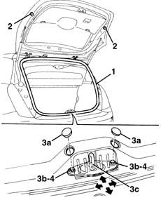

7015A10 tailgate - adjust striker and adapt seal if necessary
- Path
- Procedures > 70 FITTINGS > 7015 TAILGATE/ > 7015A tailgate assembly > 7015A10 tailgate - adjust striker and adapt seal if necessary
- Kind
- repair procedure (removal / refitting; the operation number is the code)
- Applies to
- all engines; all production periods
- Interactive page
- https://sloeber94.github.io/elrnDB-lYpsln/en/#/2429530
Applies to: all engines; all production periods
Open the tailgate.
1. Check along the whole perimeter that the tailgate seal is inserted fully in its seating.
2. If necessary, adjust the buffer blocks.
3. If necessary, remove the covers (3a) and undo the screws (3b) then adjust the position of the lock striker (3c), making use of the slotted holes. Permitted adjustment movements are indicated by arrows.
4. Tighten the fixing bolts.
 | Fastening | Component | Ø | Value (daNm) |
|---|---|---|---|---|
4 | Bolt | TAIL-GATE LOCK STRIKER | M6 | 0.9 |
Check that the striker and catch fit together properly and are aligned when the tailgate is closed.
